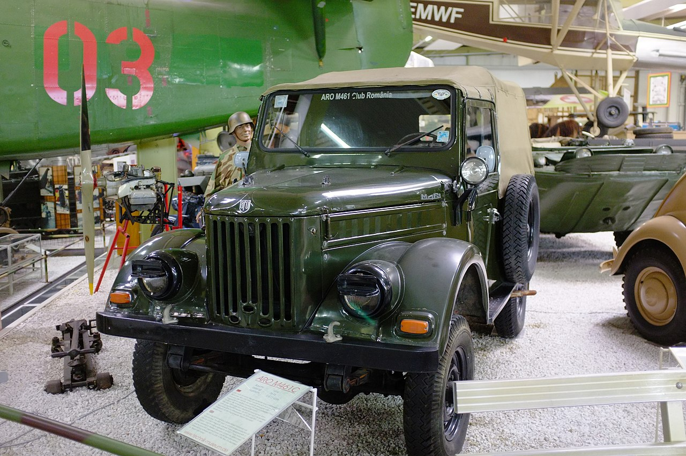

Infiintare
ARO (Auto România) a fost un producător de vehicule de teren din Câmpulung-Muscel, România. Și-a început producția în 1957 și a produs peste 380.000 de vehicule, dintre care două treimi au fost exportate în peste 110 țări (înainte de 1989, 90% din producție a fost exportată).Automobilul de teren a ieșit din fabricație în anul 2003 în România. În Cehia, Aro s-a fabricat până în 2013.
Istoria uzinei Aro începe în anul 1885 când, datorită amplasamentului propice, se construia o
fabrică de hârtie și celuloză a companiei "Letea Bacău". Fabrica și-a încetat activitatea în 1899,
iar în 1933 a fost dezafectată. Între anii 1941-1944, locul a fost folosit ca depozit pentru materiale
de către armată, iar din 1944 timp de aproape un an aici a funcționat o secție de pale de elice pentru
avion aparținând Fabricii "I.A.R. Brașov".
Între anii 1945-1950 aici s-au executat reparații ale mijloacelor de transport ce aparțineau armatelor
române și sovietice. După 1950, timp de 3 ani s-au produs: lacăte, vermorele și pompe de stropit pentru
agricultură și viticultură. În 1953, fabrica s-a reprofilat pe producția de motociclete, producând un număr
total de 12 unități din modelul IMS 53. Din anul 1957 încep să se producă piese de schimb auto
(cutii de viteze și motoare), an care coincide cu demararea fabricării autoturismelor de teren IMS 57, M59 și M461.
Apogeul Aro
Majoritatea locuitorilor comunelor învecinate lucrau la uzina Aro. În anul 1944 suprafața fabricii era de 6.000 metri
pătrați, ajungându-se în 1973 la peste 35.000 metri, din care 15.000 metri pătrați reprezentând suprafață construită.
Între 1950-1974 producția globală a crescut de 397 de ori, producția de marfă a crescut de 290 de ori iar numărul
salariaților a crescut de 10 ori.
Se lucra în 3 schimburi, iar fabrica avea o capacitate de 20.800 autoturisme pe an. Din anul 1994 s-a lucrat în 2 schimburi,
iar capacitatea era de 14.000 de autoturisme pe an.
In imagine vedem un Aro 461.
Decaderea Aro
În septembrie 2003, Statul român a vândut, pentru prețul de 180.000 USD, 68,7% din ARO companiei americane
Cross Lander, deținută de John Perez, un american născut în Cuba. În contractul de privatizare erau prevăzute
investiții de 2 milioane de dolari în ARO, dar nici o investiție nu a avut loc iar echipamentul ARO a fost vândut.
Din pacate, in prezent, fabrica Aro de la Campulung-Muscel se degradeaza pe zi ce trece.